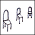
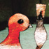

creative stuff
Herein dwells examples of the works of you talented
noise
and THE
PROGRAM
bods, with links to artist profiles and more info about the artists themselves. Onya punters.
Displaying page 1 of 6, containing 1-15 of 86 found items.
Pic //
Name //
In Brief //
Junk Food As A Proxy For Collective Identity
This artwork delves into the lifestyle of the online counter-culture.
Picture Book
A cute postcard created from a collaboration of borrowed and original images.

Fish Orchestra
There is a school of piranhas who have eaten the orchestra.

Call Me Hitler
Popcorn politics.
Save the humble cassette tape
Sing a song of sixpence, a pocket full of rye
noise collage.
Naomi
A self portrait including a digital image taken today and type I created over 20 years ago.
noisehertz
Mustard and black on white.
O N E
Colourful directions.
Avant Card Design F I V E
design #5
Avant card Design S I X
design # 6
Avant Card Design S E V E N
# 7
Federation Square Postcard
Postcard depicting Melbourne and the new federation Square building
One day
I just think it looks nice, sexy colours.
Scribble
CHARCOAL, INK ON PAPER (DIGITALLY MANIPULATED) 11 cm x 16 cm (print)
1
2
3
4
5
6
Next
status //
Guest. You may
Register
or
Log In
.
Australian Central Standard Time (GMT +09:30) //
10:59 PM, Sat, 5 Mar, 2005.